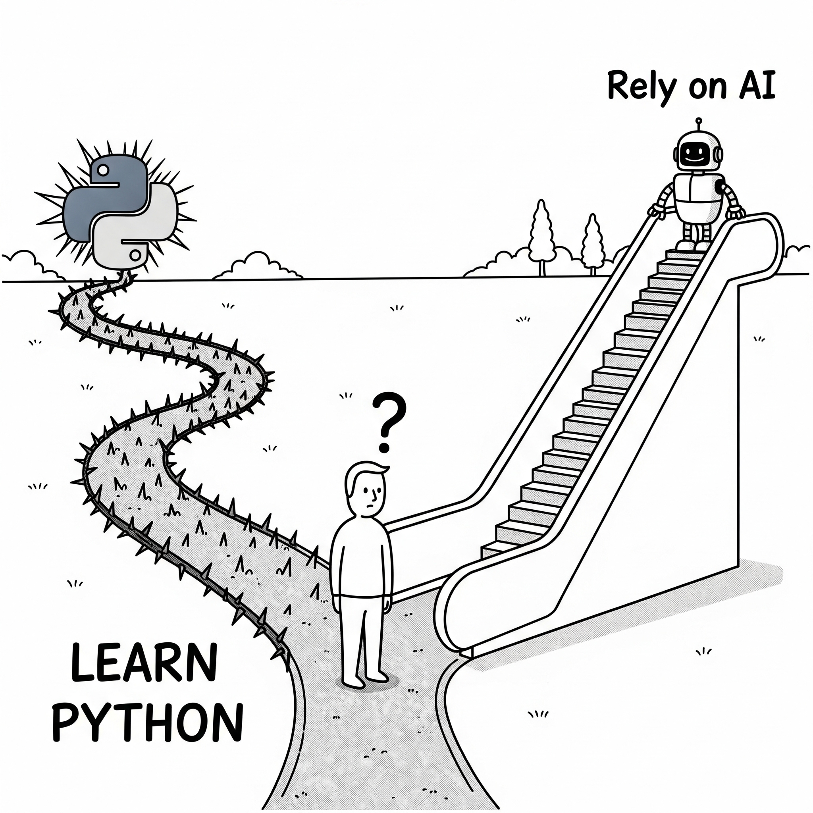

생성형 AI 이용 파이썬 실무
농촌진흥청 신규연구사 교육과정 · 2026. 10. 2.
전북대학교 통계학과
2026-10-02
강사소개
최규빈 | 전북대학교 통계학과
- Email: guebin@jbnu.ac.kr
- Phone: (+82) 63-270-3387
- YouTube: https://www.youtube.com/channel/UCQk9RyBNgXc7ORIsYlOfQrg
학습목표
본 강의를 통해 수강생들은 다음을 이해할 수 있습니다:
- AI 시대의 프로그래밍 패러다임 변화
- 생성형 AI 혁명의 타임라인과 주요 기술들
- 바이브코딩 vs 전통적 코딩의 차이점
- AI 도구 활용 실무 능력
- ChatGPT, Claude Code 등 AI 도구의 실전 활용
- 프롬프트 엔지니어링과 효과적인 AI 협업
- 미래 개발자의 핵심 역량
- AI 시대에 필요한 새로운 스킬셋
- 파이썬 학습의 필요성과 방향성
Intro: 도구의 진화
Hidden Figures
Figure: Hidden Figures, An incredible & inspiring untold true story about three women at NASA who were instrumental in one of history’s greatest operations – the launch of astronaut John Glenn into orbit. [1]
Hidden Figures

Figure: 히든피겨스에 달린 댓글들
주산
Figure: 주판 (이미지출처: 구글 제미나이)
주산
전설의 암산왕: ▶ 영상 보러가기
1950년 6·25 전쟁 이후 국가 정책 차원에서 주산 교육이 상업교육 과정에 도입되었으며, 1960년대에는 초등학교로까지 확대 보급되었다. 이 시기에는 7급부터 1급까지의 주산 급수 제도가 운영되었고, 교육부와 대한상공회의소가 주관하는 주산능력검정시험이 시행되면서 주산의 위상은 더욱 강화되었다. 그러나 1980년대 후반 전자계산기가 빠르게 보급되면서 주산 교육은 급속히 쇠퇴하였다. 결국 1991년에는 주산능력검정시험마저 폐지되었고, 이후 7차 교육과정부터는 수학 교과서에서 주산 교육이 완전히 사라지게 되었다. [2]
기술은 인재의 기준을 바꾼다
| 구분 | 기술 등장 전 인재 정의 | 기술 등장 후 인재 정의 |
|---|---|---|
| 수학 | 계산을 정확하고 빠르게 하는 사람 | 계산도구(=컴퓨터)를 활용한 문제해결과 응용에 강한 사람 |
| 프로그래밍 | 코드를 직접 작성하고 디버깅할 수 있는 사람 | AI를 활용해 아이디어를 빠르게 구현·검증하고 창의적 문제 해결에 집중하는 사람1 |
- 새로운 기술은 인재의 기준을 바꾼다. 계산기의 등장은 암산 능력을 최고라 여기던 시대를 끝냈다.
- GPT의 등장은 코더에게 어떤 의미일까?
AI 물결 속에 파이썬 공부를 해야할까?

Figure: 우리는 왼쪽으로 가야하는가? 아니면 오른쪽으로 가야하는가? (이미지출처: 구글 제미나이)
왼쪽 길
바이브코딩에 대한 비판
- Programmer Simon Willison said:
“If an LLM wrote every line of your code, but you’ve reviewed, tested, and understood it all, that’s not vibe coding in my book—that’s using an LLM as a typing assistant.”
- 저의 생각: 좀 과하지 않나?
바이브코딩의 한계
Examples
Francis Geng의 연구
Francis Geng 연구팀은 “바이브 코딩(Vibe Coding)”이라는 새로운 프로그래밍 워크플로우에서 학생들이 AI 도구와 어떻게 상호작용하는지, 그리고 이러한 상호작용이 프로그래밍 경험 수준에 따라 어떻게 다른지 조사하였음 [3]
실험설계: 연구에는 북미 연구 중심 대학의 두 컴퓨터 과학 강좌에서 모집된 총 19명의 학생이 참여했음: 초급 프로그래밍(CS1) 과정 학생 9명과 고급 소프트웨어 공학(SWE) 과정 학생 10명. 모든 참가자는 브라우저 기반 AI 통합 IDE인 Replit 플랫폼을 사용하여 개인 예산 관리 웹 애플리케이션을 구축하는 개방형 과제를 수행.
Francis Geng의 연구
발견1: 학생들은 대부분의 시간을 AI가 만든 프로토타입을 테스트하는데 사용함.

Figure: 학생들의 사용시간을 시각화한 도넛 차트
Francis Geng의 연구
- 학생들이 가장 많이 한 활동은 프로토타입 상호작용임. (64%) 즉, “내가 만든 앱이 제대로 돌아가는가?” 확인하는데 쓰였음.
- 두번째로 많이 한 행동은 프롬프트 작성 (21%):
- 심지어 프롬프트를 작성한 이유 중 가장 많은것은 새기능 요청이 아니라 디버깅 요청임 (61%)1
- 실제 코드를 짜거나 들여다보고 고치는데 쓴 시간은 거의 없었음. (7%)
- 이마저도 90.37%는 단순 코드 해석에 투자하였으며,
- 직접적인 코드 수정은 9.63%에 불과했음.2
Francis Geng의 연구
발견2: 초보자와 숙력자의 차이 (프로프트 작성 능력의 차이)
Figure: 초보자의 숙련자의 프롬프트 차이
왼쪽 길을 지지하는 사람들의 의견
- AI시대 코딩에 필요한 역량을 요약하면 아래와 같음:
- 테스트 & 디버깅
- 풍부한 맥락의 프롬프팅: 기술적 정확성으로 문제를 설명하는 능력
- 코드 이해력: AI 결과물을 이해하는 기술
- 쉽게 말하면, 코딩 할 줄 알아야 한다는 의미.
데이터분석을 위한 파이썬 공부 (GPT이전)
파이썬
- 기본문법: 파이썬 자료형, 조건문, 반복문, 함수
- 고급문법: 클래스, 상속, 데코레이터, 클로저, 콘텍스트 매니저, ABC, 예외처리
- 개발도구: 모듈, 패키지
- 데이터과학: 넘파이, 판다스
- 시각화: matplotlib, seaborn, plotly
- 머신러닝/딥러닝: scikit-learn, torch, tensorflow, huggingface
강의 소개
2022.11 - 2022.12
- 2022년 11월
- ChatGPT 출시
- 2022년 12월
- Perplexity 출시: 답변에 인용 출처를 제공 [4]
2023.01 - 2023.12
2024.01 - 2024.06
2024.07 - 2024.12
2025.01 - 2025.07
2025.08 - 2025.12
- 2025년 8월
- 2025년 10월
- 2025년 11월
- 2025년 12월
- MCP가 리눅스재단 Agentic AI Foundation으로 이관 [37] — 표준 전쟁의 끝
2026.01 - 2026.02
2026.03 - 2026.04
2026.06
2026.07
생성형 AI 혁명 타임라인
주관적으로 정리해본 주요 사건
- 2022.11: ChatGPT로 생성형 AI 대중화 시작
- 2023.02: Google Bard 발표
- 2024.11: MCP의 등장
- 2025.01: DeepSeek-R1 출시
- 2025.02: “바이브코딩” 등장 (카파시)
- 2025.05: 클로드코드 출시
- 2026.01: OpenClaw — 내 컴퓨터에서 도는 개인 에이전트 열풍
- 2026.06: Mythos 쇼크와 수출통제 — Opus 위의 새 등급, AI 모델에 첫 수출통제
생성형 AI 혁명 타임라인
주요 경쟁 구도 (2026년 9월 기준)
- 모델: ChatGPT(GPT-5.6) vs Claude(Fable 5.1 · Opus 5 · Sonnet 5) vs Gemini(3.5 · Omni)
- 에이전틱 AI: Codex vs Claude Code vs Gemini CLI
저의 구독 정보
| 서비스 | 요금제 | 월 요금 |
|---|---|---|
| ChatGPT (Codex) | Pro × 계정 2개 | ₩299,000 × 2 |
| Claude (Claude Code) | Max 20x × 계정 2개 | $220 × 2 (부가세 포함) |
2026년 10월 기준. 계정마다 주간 사용 한도가 있어 둘씩 돌려 씁니다.
구독 전략: 번거롭더라도 월 단위 구독이 유리함. 왜? 너무 빨리 변해서.
2026 트렌드 ①: 에이전트 AI
- 프롬프트 엔지니어링 (2023~) — 질문 한 번을 잘 쓰기. 역할·예시·출력 형식.
- 컨텍스트 엔지니어링 (2025.06~) — 모델이 보는 것 전체를 설계하기. 문서·검색 결과·도구 출력·대화 기록 중 무엇을 문맥 창에 넣을지 [52]
- 하네스 엔지니어링 (2026~) — 에이전트가 일하는 환경을 설계하기. 도구·권한·샌드박스·규칙 파일(CLAUDE.md, AGENTS.md)·스킬. 같은 모델도 하네스가 다르면 결과가 다르다 [53]
- 루프 엔지니어링 — 반복과 검증을 설계하기. 계획→실행→검증→수정을 어떻게 돌리고 언제 사람이 확인할지1
2026 트렌드 ②: 로컬 LLM
오른쪽 길을 마치며
- 가장 인기 있는 새로운 프로그래밍 언어는 영어 (Andrej Karpathy)
마치며: 격세지감을 느끼는 요즘
인공지능
인공지능
’인공지능’이라는 단어는 당시 기술로는 설명하기 어렵지만, 인간처럼 똑똑하게 행동하는 무언가를 지칭하는 그릇

Figure: 시대별로 변화해 온 인공지능(AI)의 의미 (이미지: Gemini 생성)
나의 작업물: 프로젝트 페이지 & 패키지 배포
나의 작업물: 관심있는 논문 정리
앱개발자로서의 삶
- 푸르름
- 맥엠
- 투명잉크
- 잉크
- 까투리